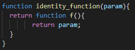

Schreiben Sie eine Funktion identity(), die ein Argument als Parameter entgegen nimmt und dieses als Ergebnis zurück gibt:

Schreiben Sie eine Funktion identity_function(), die ein Argument als Parameter entgegen nimmt und eine Funktion zurück gibt, die dieses Argument zurück gibt:
Schreiben Sie zwei binäre Funktionen add und mul, die Summe und Produkt berechnen:


Schreiben Sie eine Addier-Funktion addf(), so dass addf(x)(y) genau x + y zurück gibt. (Es haben also zwei Funktionsaufrufe zu erfolgen. addf(x) liefert eine Funktion, die auf y angewandt wird.):
//TODO applyf